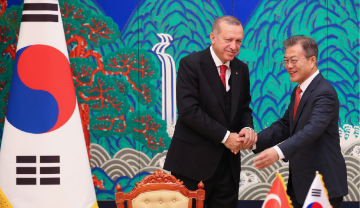

- HTML
- css
- JavaScript
HTML
Turkish leader affirms partnership with Seoul

South Korean President Moon Jae-in, right, welcomes Turkish President Recep Tayyip Erdogan to a summit meeting in his office at the Blue House on Wednesday. [YONHAP]
The presidents of South Korea and Turkey agreed on Wednesday to enhance cooperation in trade, education and technology.
Recep Tayyip Erdogan is the first Turkish leader to make a state visit to South Korea since
the countries upgraded their ties to a strategic partnership in 2012. The countriesestablished diplomatic ties in 1957.
"At the summit, the two leaders noted the strate6ress release. Erdogan is the first foreign leader to visit South Korea since the historic summit between South Korean President Moon Jae-in and North Korean leader Kim Jong-un at the border village of Panmunjom on Friday. The Turkish leader reaffirmed his country’s support for the denuclearization of the Korean Peninsula and establishment of a permanent peace.“President Erdogan congratulated President Moon for the successful 2018 South-NorthKorea summit and welcomed the adoption of the historic Panmunjom Declaration on peace, prosperity and unification of the Korean Peninsula,” the leaders said in a joint press statement issued at the end of their bilateral summit in Seoul.
링크!